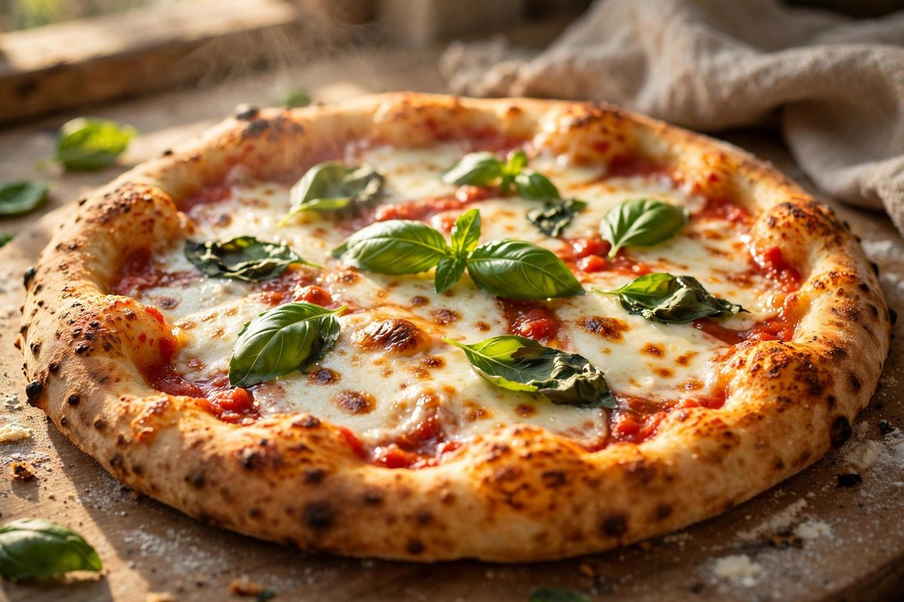

Home › Guides
Pizza at Home: Dough, Toppings and a Hot Oven

Good pizza at home does not need a wood-fired oven or professional equipment. It needs a dough that has had time to rise, an oven as hot as it will go, and the restraint to stop adding toppings. Most home pizzas fail on one of those three points, and all three are easy to fix.
The dough
A simple dough is flour, water, yeast, salt and a little olive oil. Use strong bread flour if you can, about 500 grams of flour to 325 millilitres of water, with 7 grams of instant yeast and 10 grams of salt. Mix until it comes together, knead for about ten minutes until smooth, then let it rise until doubled, usually one to two hours.
For better flavour, let the dough rise slowly in the fridge overnight. Cold fermentation develops taste and makes the dough easier to stretch. Bring the dough back to room temperature for about an hour before shaping. Never use a rolling pin on pizza dough; stretch it gently with your hands from the centre outwards, leaving a thicker edge for the crust.
The sauce and the cheese
Pizza sauce is simple: crushed tomatoes, a pinch of salt, and little else. Cooked, heavily seasoned sauce belongs on pasta, not pizza. Spread a thin layer, about three tablespoons, leaving the edge bare. Too much sauce makes the base soggy.
Fresh mozzarella is the classic choice. Tear it into small pieces and use less than you think, about 100 to 125 grams per pizza. Low-moisture mozzarella melts more evenly and is a good choice for home ovens. Grate a little Parmesan over the top for depth, and save fresh basil for after baking so it does not burn.
The oven
Heat the oven as hot as it will go, usually 250 to 275 degrees Celsius, for at least 30 minutes before baking. A pizza stone or a heavy baking tray left in the oven to heat up makes a real difference, because the base cooks from below as soon as it touches the hot surface.
Bake on the lowest shelf, or directly on the stone, for 6 to 10 minutes. The crust should be golden and spotted, the cheese bubbling, and the base firm enough to hold when lifted. If the top cooks faster than the base, move the pizza lower. If the base burns before the top cooks, move it higher.
Toppings that work
Less is more. Three or four toppings are enough. Classic combinations work because the flavours balance: tomato, mozzarella and basil; tomato, mozzarella and mushroom; or a white pizza with mozzarella, potato and rosemary. Avoid wet toppings such as fresh tomato slices or too much cheese, which make the base steam instead of crisp.
Add delicate toppings such as rocket, prosciutto or fresh basil after the pizza comes out of the oven. Cook heavier toppings such as sausage or peppers on the pizza, but cut them small so they cook through in the short baking time.
Common mistakes
The most common mistakes are a cold oven, a dough that has not risen enough, too much sauce, and too many toppings. Each one is easy to fix. Give the oven time, give the dough time, and hold back on the toppings.
Another mistake is stretching the dough too thin in the middle. If the centre tears, patch it with a little extra dough rather than starting again. A slightly uneven pizza that tastes good beats a perfect-looking one that is soggy.
Frequently Asked Questions
What temperature should I bake pizza at?
As hot as your oven goes, usually 250 to 275 C, preheated for at least 30 minutes with a stone or heavy tray inside.
Why is my pizza base soggy?
Usually too much sauce, too many wet toppings, or an oven that was not hot enough. Use less sauce and preheat a stone or tray.
Can I make pizza dough the day before?
Yes, and it tastes better. Let it rise slowly in the fridge overnight, then bring it to room temperature for an hour before shaping.